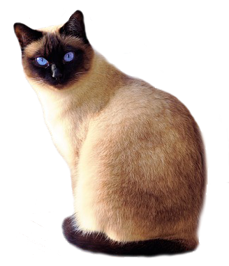
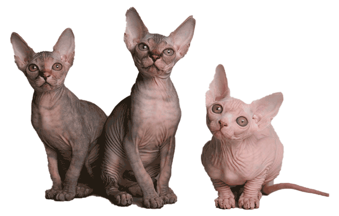
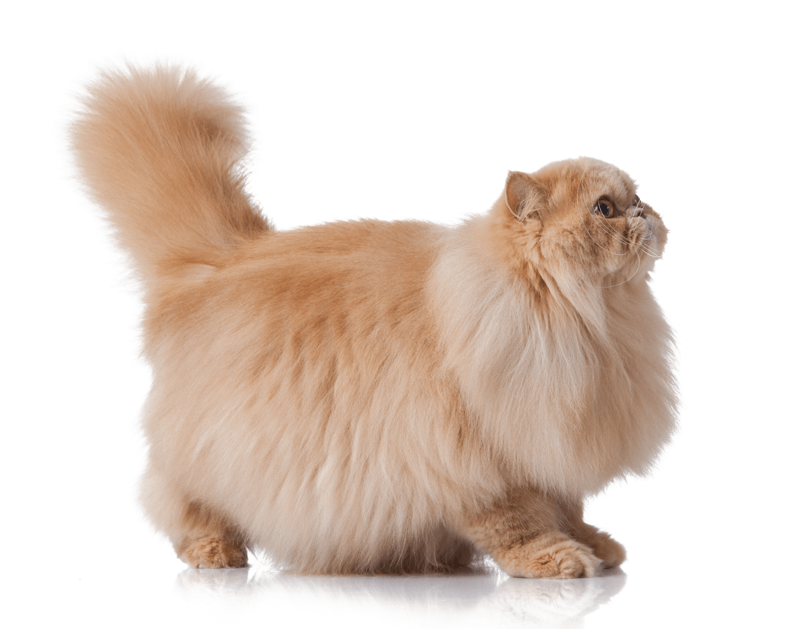
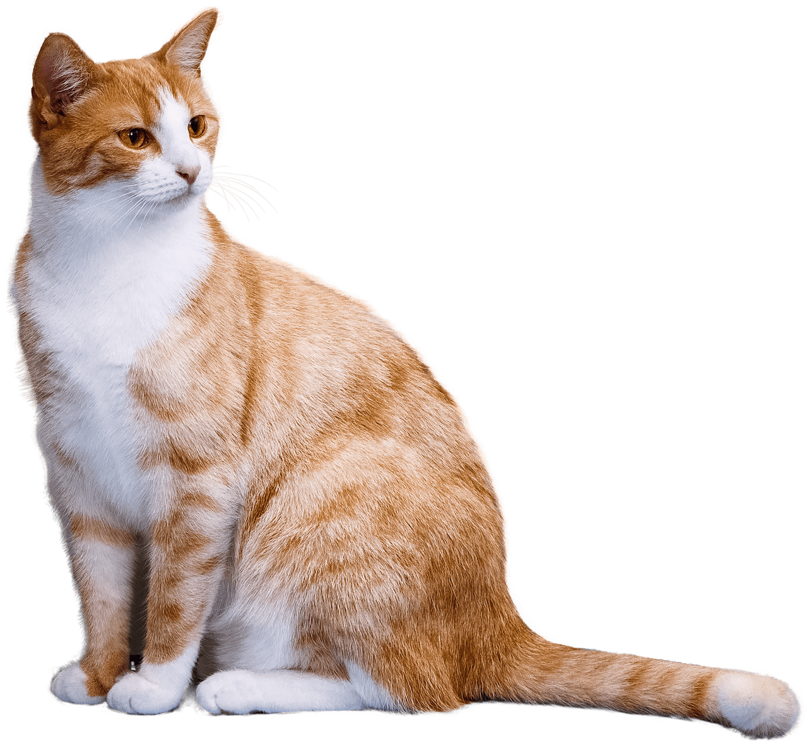
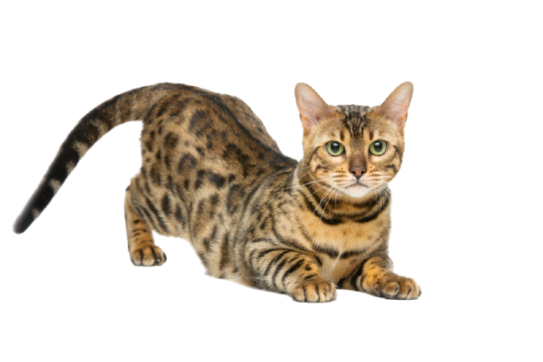

Suaves, lindos y esponjosos
El gato doméstico, llamado popularmente gato, y de forma coloquial minino, michino, michi, micho, mizo, miz, morroño o morrongo, entre otros nombres, es un mamífero carnívoro de la familia Felidae. Es una subespecie domesticada por la convivencia con el ser humano.
Leer mas

- 
- 
- 
- 